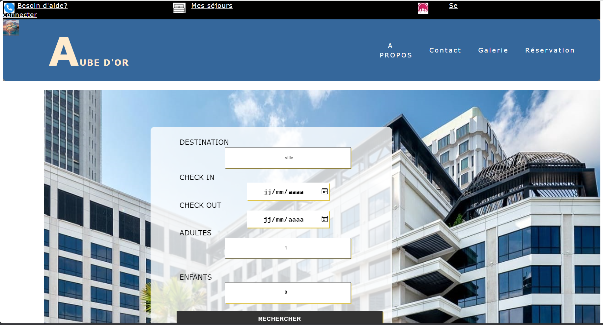

Cœur d'expertise
Back-end & Architecture Logicielle
Conception de domaines métiers découplés, APIs performantes et traitements asynchrones orientés événements.
Architecture back-end .NET 10, interfaces React 19 et recherche sémantique vectorielle — du domaine métier jusqu'au déploiement.
Élève ingénieur en génie informatique en fin de cycle à Ouagadougou. J'ai conçu, développé et déployé seul en production une plateforme d'entreprise de gestion des connaissances à recherche sémantique locale par embeddings.
Conception d'applications critiques robustes, maintenables et déployables sur infrastructures cloud ou intranets cloisonnés.
Conception de domaines métiers découplés, APIs performantes et traitements asynchrones orientés événements.
Interfaces réactives typées, tableaux de bord complexes et applications mobiles multiplateformes.
Modélisation relationnelle, indexation vectorielle par embeddings et stockage d'objets distribué.
Automatisation des pipelines d'intégration, conteneurisation rootless et reverse-proxy en environnement isolé.
Fédération d'identité d'entreprise, contrôle d'accès granulaire par rôles et durcissement d'infrastructure.
Polyvalence technique acquise sur des projets académiques et personnels, modélisation UML et gestion agile.
Des réalisations mesurées en contexte industriel et opérateur télécom.
Projet KnoShare, plateforme de partage des connaissances techniques
Opérateur de télécommunications, Ouagadougou
Du système d'entreprise déployé sur intranet cloisonné aux plateformes SaaS et infrastructures sécurisées.
Plateforme de partage des connaissances techniques à recherche sémantique locale par embeddings (88 % de précision), graphe d'interconnexion des savoirs, SSO AD FS et RBAC, déployée sur intranet cloisonné.
Plateforme SaaS de digitalisation des tontines africaines — épargne collective avec paiement mobile money, audit immuable et score crédit.
API de billetterie événementielle — Clean Architecture, CQRS, authentification JWT par OTP, stockage MinIO.
Template multi-tier production-ready — API .NET, dashboard Next.js, app mobile Flutter, monitoring Prometheus/Grafana, CI/CD.
Infrastructure virtualisée sécurisée — pfSense, Ubuntu Server, Windows Server, Active Directory, Fail2Ban, tests de pénétration.
Système de gestion des dossiers médicaux — hackathon Come 2 Code 2025.
Application web de gestion immobilière — multi-profils, messagerie, rendez-vous, paiements.

Projet Intégrateur L1 · 2024Site hôtelier + BDD Access — Université Aube Nouvelle – 2024.
Cursus d'ingénierie informatique et ouverture internationale.
Génie informatique — Université Aube Nouvelle (Ouagadougou)
Mémoire sur les plateformes sémantiques de gestion des connaissances.
Voir le diplôme (PDF)Lycée Technique National / ASL
Baccalauréat technique, option informatique.
Voir le diplôme (PDF)Basé à Ouagadougou, Burkina Faso — disponible pour des opportunités d'ingénieur logiciel .NET / React sur site, hybride ou à distance.